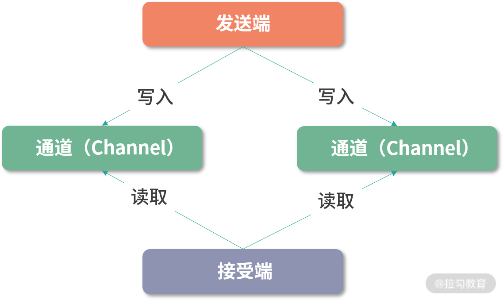

- 00 开篇词 深入掌握 Dubbo 原理与实现，提升你的职场竞争力.md.html
- 01 Dubbo 源码环境搭建：千里之行，始于足下.md.html
- 02 Dubbo 的配置总线：抓住 URL，就理解了半个 Dubbo.md.html
- 03 Dubbo SPI 精析，接口实现两极反转（上）.md.html
- 04 Dubbo SPI 精析，接口实现两极反转（下）.md.html
- 05 海量定时任务，一个时间轮搞定.md.html
- 06 ZooKeeper 与 Curator，求你别用 ZkClient 了（上）.md.html
- 07 ZooKeeper 与 Curator，求你别用 ZkClient 了（下）.md.html
- 08 代理模式与常见实现.md.html
- 09 Netty 入门，用它做网络编程都说好（上）.md.html
- 10 Netty 入门，用它做网络编程都说好（下）.md.html
- 11 简易版 RPC 框架实现（上）.md.html
- 12 简易版 RPC 框架实现（下）.md.html
- 13 本地缓存：降低 ZooKeeper 压力的一个常用手段.md.html
- 14 重试机制是网络操作的基本保证.md.html
- 15 ZooKeeper 注册中心实现，官方推荐注册中心实践.md.html
- 16 Dubbo Serialize 层：多种序列化算法，总有一款适合你.md.html
- 17 Dubbo Remoting 层核心接口分析：这居然是一套兼容所有 NIO 框架的设计？.md.html
- 18 Buffer 缓冲区：我们不生产数据，我们只是数据的搬运工.md.html
- 19 Transporter 层核心实现：编解码与线程模型一文打尽（上）.md.html
- 20 Transporter 层核心实现：编解码与线程模型一文打尽（下）.md.html
- 21 Exchange 层剖析：彻底搞懂 Request-Response 模型（上）.md.html
- 22 Exchange 层剖析：彻底搞懂 Request-Response 模型（下）.md.html
- 23 核心接口介绍，RPC 层骨架梳理.md.html
- 24 从 Protocol 起手，看服务暴露和服务引用的全流程（上）.md.html
- 25 从 Protocol 起手，看服务暴露和服务引用的全流程（下）.md.html
- 26 加餐：直击 Dubbo “心脏”，带你一起探秘 Invoker（上）.md.html
- 27 加餐：直击 Dubbo “心脏”，带你一起探秘 Invoker（下）.md.html
- 28 复杂问题简单化，代理帮你隐藏了多少底层细节？.md.html
- 29 加餐：HTTP 协议 + JSON-RPC，Dubbo 跨语言就是如此简单.md.html
- 30 Filter 接口，扩展 Dubbo 框架的常用手段指北.md.html
- 31 加餐：深潜 Directory 实现，探秘服务目录玄机.md.html
- 32 路由机制：请求到底怎么走，它说了算（上）.md.html
- 33 路由机制：请求到底怎么走，它说了算（下）.md.html
- 34 加餐：初探 Dubbo 动态配置的那些事儿.md.html
- 35 负载均衡：公平公正物尽其用的负载均衡策略，这里都有（上）.md.html
- 36 负载均衡：公平公正物尽其用的负载均衡策略，这里都有（下）.md.html
- 37 集群容错：一个好汉三个帮（上）.md.html
- 38 集群容错：一个好汉三个帮（下）.md.html
- 39 加餐：多个返回值不用怕，Merger 合并器来帮忙.md.html
- 40 加餐：模拟远程调用，Mock 机制帮你搞定.md.html
- 41 加餐：一键通关服务发布全流程.md.html
- 42 加餐：服务引用流程全解析.md.html
- 43 服务自省设计方案：新版本新方案.md.html
- 44 元数据方案深度剖析，如何避免注册中心数据量膨胀？.md.html
- 45 加餐：深入服务自省方案中的服务发布订阅（上）.md.html
- 46 加餐：深入服务自省方案中的服务发布订阅（下）.md.html
- 47 配置中心设计与实现：集中化配置 and 本地化配置，我都要（上）.md.html
- 48 配置中心设计与实现：集中化配置 and 本地化配置，我都要（下）.md.html
- 49 结束语 认真学习，缩小差距.md.html
- 捐赠
17 Dubbo Remoting 层核心接口分析：这居然是一套兼容所有 NIO 框架的设计？
在本专栏的第二部分，我们深入介绍了 Dubbo 注册中心的相关实现，下面我们开始介绍 dubbo-remoting 模块，该模块提供了多种客户端和服务端通信的功能。在 Dubbo 的整体架构设计图中，我们可以看到最底层红色框选中的部分即为 Remoting 层，其中包括了 Exchange、Transport和Serialize 三个子层次。这里我们要介绍的 dubbo-remoting 模块主要对应 Exchange 和 Transport 两层。

Dubbo 整体架构设计图
Dubbo 并没有自己实现一套完整的网络库，而是使用现有的、相对成熟的第三方网络库，例如，Netty、Mina 或是 Grizzly 等 NIO 框架。我们可以根据自己的实际场景和需求修改配置，选择底层使用的 NIO 框架。
下图展示了 dubbo-remoting 模块的结构，其中每个子模块对应一个第三方 NIO 框架，例如，dubbo-remoting-netty4 子模块使用 Netty4 实现 Dubbo 的远程通信，dubbo-remoting-grizzly 子模块使用 Grizzly 实现 Dubbo 的远程通信。

其中的 dubbo-remoting-zookeeper，我们在前面第 15 课时介绍基于 Zookeeper 的注册中心实现时已经讲解过了，它使用 Apache Curator 实现了与 Zookeeper 的交互。
dubbo-remoting-api 模块
需要注意的是，Dubbo 的 dubbo-remoting-api 是其他 dubbo-remoting-* 模块的顶层抽象，其他 dubbo-remoting 子模块都是依赖第三方 NIO 库实现 dubbo-remoting-api 模块的，依赖关系如下图所示：

我们先来看一下 dubbo-remoting-api 中对整个 Remoting 层的抽象，dubbo-remoting-api 模块的结构如下图所示：

一般情况下，我们会将功能类似或是相关联的类放到一个包中，所以我们需要先来了解 dubbo-remoting-api 模块中各个包的功能。
- buffer 包：定义了缓冲区相关的接口、抽象类以及实现类。缓冲区在NIO框架中是一个不可或缺的角色，在各个 NIO 框架中都有自己的缓冲区实现。这里的 buffer 包在更高的层面，抽象了各个 NIO 框架的缓冲区，同时也提供了一些基础实现。
- exchange 包：抽象了 Request 和 Response 两个概念，并为其添加很多特性。这是整个远程调用非常核心的部分。
- transport 包：对网络传输层的抽象，但它只负责抽象单向消息的传输，即请求消息由 Client 端发出，Server 端接收；响应消息由 Server 端发出，Client端接收。有很多网络库可以实现网络传输的功能，例如 Netty、Grizzly 等， transport 包是在这些网络库上层的一层抽象。
- 其他接口：Endpoint、Channel、Transporter、Dispatcher 等顶层接口放到了org.apache.dubbo.remoting 这个包，这些接口是 Dubbo Remoting 的核心接口。
下面我们就来介绍 Dubbo 是如何抽象这些核心接口的。
传输层核心接口
在 Dubbo 中会抽象出一个“端点（Endpoint）”的概念，我们可以通过一个 ip 和 port 唯一确定一个端点，两个端点之间会创建 TCP 连接，可以双向传输数据。Dubbo 将 Endpoint 之间的 TCP 连接抽象为通道（Channel），将发起请求的 Endpoint 抽象为客户端（Client），将接收请求的 Endpoint 抽象为服务端（Server）。这些抽象出来的概念，也是整个 dubbo-remoting-api 模块的基础，下面我们会逐个进行介绍。
Dubbo 中Endpoint 接口的定义如下：
如上图所示，这里的 get*() 方法是获得 Endpoint 本身的一些属性，其中包括获取 Endpoint 的本地地址、关联的 URL 信息以及底层 Channel 关联的 ChannelHandler。send() 方法负责数据发送，两个重载的区别在后面介绍 Endpoint 实现的时候我们再详细说明。最后两个 close() 方法的重载以及 startClose() 方法用于关闭底层 Channel ，isClosed() 方法用于检测底层 Channel 是否已关闭。
Channel 是对两个 Endpoint 连接的抽象，好比连接两个位置的传送带，两个 Endpoint 传输的消息就好比传送带上的货物，消息发送端会往 Channel 写入消息，而接收端会从 Channel 读取消息。这与第 10 课时介绍的 Netty 中的 Channel 基本一致。

下面是Channel 接口的定义，我们可以看出两点：一个是 Channel 接口继承了 Endpoint 接口，也具备开关状态以及发送数据的能力；另一个是可以在 Channel 上附加 KV 属性。

ChannelHandler 是注册在 Channel 上的消息处理器，在 Netty 中也有类似的抽象，相信你对此应该不会陌生。下图展示了 ChannelHandler 接口的定义，在 ChannelHandler 中可以处理 Channel 的连接建立以及连接断开事件，还可以处理读取到的数据、发送的数据以及捕获到的异常。从这些方法的命名可以看到，它们都是动词的过去式，说明相应事件已经发生过了。

需要注意的是：ChannelHandler 接口被 @SPI 注解修饰，表示该接口是一个扩展点。
在前面课时介绍 Netty 的时候，我们提到过有一类特殊的 ChannelHandler 专门负责实现编解码功能，从而实现字节数据与有意义的消息之间的转换，或是消息之间的相互转换。在dubbo-remoting-api 中也有相似的抽象，如下所示：
@SPI
public interface Codec2 {
@Adaptive({Constants.CODEC_KEY})
void encode(Channel channel, ChannelBuffer buffer, Object message)
throws IOException;
@Adaptive({Constants.CODEC_KEY})
Object decode(Channel channel, ChannelBuffer buffer)
throws IOException;
enum DecodeResult {
NEED_MORE_INPUT, SKIP_SOME_INPUT
}
}
这里需要关注的是 Codec2 接口被 @SPI 接口修饰了，表示该接口是一个扩展接口，同时其 encode() 方法和 decode() 方法都被 @Adaptive 注解修饰，也就会生成适配器类，其中会根据 URL 中的 codec 值确定具体的扩展实现类。
DecodeResult 这个枚举是在处理 TCP 传输时粘包和拆包使用的，之前简易版本 RPC 也处理过这种问题，例如，当前能读取到的数据不足以构成一个消息时，就会使用 NEED_MORE_INPUT 这个枚举。
接下来看Client 和 RemotingServer 两个接口，分别抽象了客户端和服务端，两者都继承了 Channel、Resetable 等接口，也就是说两者都具备了读写数据能力。
Client 和 Server 本身都是 Endpoint，只不过在语义上区分了请求和响应的职责，两者都具备发送的能力，所以都继承了 Endpoint 接口。Client 和 Server 的主要区别是 Client 只能关联一个 Channel，而 Server 可以接收多个 Client 发起的 Channel 连接。所以在 RemotingServer 接口中定义了查询 Channel 的相关方法，如下图所示：

Dubbo 在 Client 和 Server 之上又封装了一层Transporter 接口，其具体定义如下：
@SPI("netty")
public interface Transporter {
@Adaptive({Constants.SERVER_KEY, Constants.TRANSPORTER_KEY})
RemotingServer bind(URL url, ChannelHandler handler)
throws RemotingException;
@Adaptive({Constants.CLIENT_KEY, Constants.TRANSPORTER_KEY})
Client connect(URL url, ChannelHandler handler)
throws RemotingException;
}
我们看到 Transporter 接口上有 @SPI 注解，它是一个扩展接口，默认使用“netty”这个扩展名，@Adaptive 注解的出现表示动态生成适配器类，会先后根据“server”“transporter”的值确定 RemotingServer 的扩展实现类，先后根据“client”“transporter”的值确定 Client 接口的扩展实现。
Transporter 接口的实现有哪些呢？如下图所示，针对每个支持的 NIO 库，都有一个 Transporter 接口实现，散落在各个 dubbo-remoting-* 实现模块中。

这些 Transporter 接口实现返回的 Client 和 RemotingServer 具体是什么呢？如下图所示，返回的是 NIO 库对应的 RemotingServer 实现和 Client 实现。


相信看到这里，你应该已经发现 Transporter 这一层抽象出来的接口，与 Netty 的核心接口是非常相似的。那为什么要单独抽象出 Transporter层，而不是像简易版 RPC 框架那样，直接让上层使用 Netty 呢？
其实这个问题的答案也呼之欲出了，Netty、Mina、Grizzly 这个 NIO 库对外接口和使用方式不一样，如果在上层直接依赖了 Netty 或是 Grizzly，就依赖了具体的 NIO 库实现，而不是依赖一个有传输能力的抽象，后续要切换实现的话，就需要修改依赖和接入的相关代码，非常容易改出 Bug。这也不符合设计模式中的开放-封闭原则。
有了 Transporter 层之后，我们可以通过 Dubbo SPI 修改使用的具体 Transporter 扩展实现，从而切换到不同的 Client 和 RemotingServer 实现，达到底层 NIO 库切换的目的，而且无须修改任何代码。即使有更先进的 NIO 库出现，我们也只需要开发相应的 dubbo-remoting-* 实现模块提供 Transporter、Client、RemotingServer 等核心接口的实现，即可接入，完全符合开放-封闭原则。
在最后，我们还要看一个类——Transporters，它不是一个接口，而是门面类，其中封装了 Transporter 对象的创建（通过 Dubbo SPI）以及 ChannelHandler 的处理，如下所示：
public class Transporters {
private Transporters() {
// 省略bind()和connect()方法的重载
public static RemotingServer bind(URL url,
ChannelHandler... handlers) throws RemotingException {
ChannelHandler handler;
if (handlers.length == 1) {
handler = handlers[0];
} else {
handler = new ChannelHandlerDispatcher(handlers);
}
return getTransporter().bind(url, handler);
}
public static Client connect(URL url, ChannelHandler... handlers)
throws RemotingException {
ChannelHandler handler;
if (handlers == null || handlers.length == 0) {
handler = new ChannelHandlerAdapter();
} else if (handlers.length == 1) {
handler = handlers[0];
} else { // ChannelHandlerDispatcher
handler = new ChannelHandlerDispatcher(handlers);
}
return getTransporter().connect(url, handler);
}
public static Transporter getTransporter() {
// 自动生成Transporter适配器并加载
return ExtensionLoader.getExtensionLoader(Transporter.class)
.getAdaptiveExtension();
}
}
在创建 Client 和 RemotingServer 的时候，可以指定多个 ChannelHandler 绑定到 Channel 来处理其中传输的数据。Transporters.connect() 方法和 bind() 方法中，会将多个 ChannelHandler 封装成一个 ChannelHandlerDispatcher 对象。
ChannelHandlerDispatcher 也是 ChannelHandler 接口的实现类之一，维护了一个 CopyOnWriteArraySet 集合，它所有的 ChannelHandler 接口实现都会调用其中每个 ChannelHandler 元素的相应方法。另外，ChannelHandlerDispatcher 还提供了增删该 ChannelHandler 集合的相关方法。
到此为止，Dubbo Transport 层的核心接口就介绍完了，这里简单总结一下：
- Endpoint 接口抽象了“端点”的概念，这是所有抽象接口的基础。
- 上层使用方会通过 Transporters 门面类获取到 Transporter 的具体扩展实现，然后通过 Transporter 拿到相应的 Client 和 RemotingServer 实现，就可以建立（或接收）Channel 与远端进行交互了。
- 无论是 Client 还是 RemotingServer，都会使用 ChannelHandler 处理 Channel 中传输的数据，其中负责编解码的 ChannelHandler 被抽象出为 Codec2 接口。
整个架构如下图所示，与 Netty 的架构非常类似。

Transporter 层整体结构图
总结
本课时我们首先介绍了 dubbo-remoting 模块在 Dubbo 架构中的位置，以及 dubbo-remoting 模块的结构。接下来分析了 dubbo-remoting 模块中各个子模块之间的依赖关系，并重点介绍了 dubbo-remoting-api 子模块中各个包的核心功能。最后我们还深入分析了整个 Transport 层的核心接口，以及这些接口抽象出来的 Transporter 架构。
关于本课时，你若还有什么疑问或想法，欢迎你留言跟我分享。
© 2019 - 2023 Liangliang Lee. Powered by gin and hexo-theme-book.